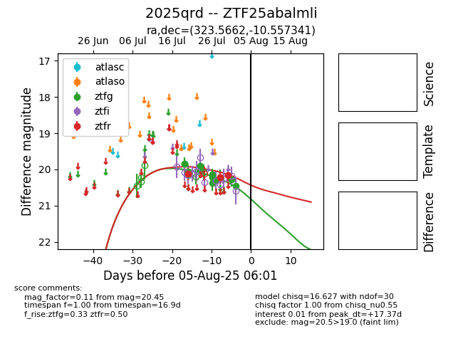

Target 2025qrd at 2025-08-05 06:01, see:
FINK: fink-portal.org/2025qrd
Lasair: lasair-ztf.lsst.ac.uk/objects/2025qrd
ALeRCE: alerce.online/object/2025qrd
TNS: wis-tns.org/object/2025qrd
YSE: ziggy.ucolick.org/yse/transient_detail/2025qrd
alt names
ZTF25abalmli (ztf,fink)
2025qrd (tns,yse)
coordinates:
equatorial (ra, dec) = (323.5662,-10.55734)
galactic (l, b) = (42.7742,-40.85586)
photometry
last ztfg=20.45, ztfr=20.16
13 ztfg, 3 ztfr detections
